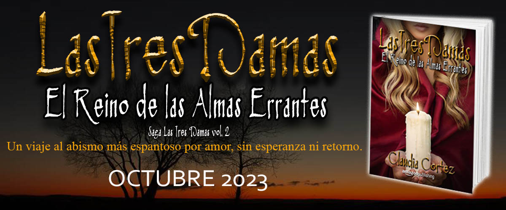

<div class="container">    
    <!-- <app-carousel [slides]=slides></app-carousel> -->
    
    <div class="text">
        <h2>El Reino de las Almas Errantes</h2>
        <p>Seis años han pasado desde que Julia se enfrentó a lo que cientos de generaciones han temido y a lo que otras cientos han pretendido ignorar. Perdió mucho en esa batalla y su alma quedó herida para siempre.</p>
        <p>Cuando al fin su vida está en calma, un inesperado accidente la obliga a mirar a la muerte a la cara una vez más. Y se da cuenta que aún tiene fuerzas para luchar por lo que ama, y que está dispuesta a hacer cualquier cosa por recuperar lo quieren arrebatarle.</p>
        <blockquote>Voy a buscarte. No me importa hasta dónde tenga que llegar, te encontraré y te traeré conmigo.</blockquote>
    </div>
</div>